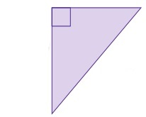
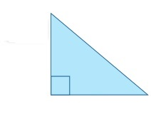
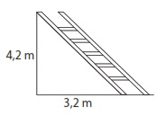
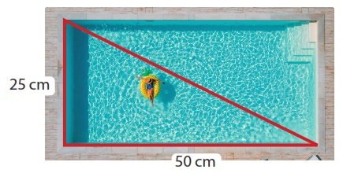
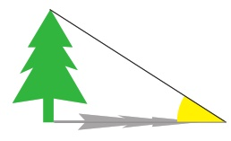
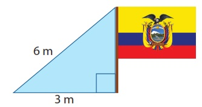
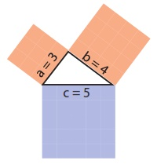

1.
Escribe verdadero V o falso F según
corresponda.
2.
Comprueba si los siguientes lados pueden formar un triángulo rectángulo aplicando el teorema de
Pitágoras.
3.
Encuentra el valor de la hipotenusa que cumple con el teorema de Pitágoras en el siguiente
triángulo. Selecciona la respuesta correcta.
4.
En un triángulo rectángulo, la hipotenusa mide 10 cm y uno de los catetos mide 8 cm. ¿Cuál es la longitud
del otro cateto?

cm
cm
cm
5.
Encuentra la longitud de la hipotenusa cuyos lados son 2, 8 cm y 3,5 cm.

cm
cm
cm

6.
Tenemos una escalera apoyada contra una pared. El pie de la escalera está a 3,2 metros de la pared, y la
distancia desde la base de la escalera hasta la pared es de 4,2 metros. ¿Cuál es la longitud total de la
escalera?

La longitud de la escalera es: m.
7.
¿Cuál es la máxima distancia que una persona puede nadar en una piscina rectangular de 50 metros de largo
y 25 metros de ancho si solo puede nadar en línea recta?
La distancia máxima que podría nadar es de: m.

La distancia máxima que podría nadar es de: m.
8.
Un árbol proyecta una sombra de 2 metros. Si la distancia desde la cima del árbol hasta el punto más
lejano
de la sombra es de 3,5 metros, ¿cuál es la altura del árbol?
La altura del árbol es de: m.

La altura del árbol es de: m.
9.
Calcula cuál es la longitud del asta de la bandera que se muestra a continuación.
La longitud del asta es de: m.

La longitud del asta es de: m.

Formen parejas. El teorema de Pitágoras ha sido comprobado de diversas maneras a lo largo de la
historia, y existen numerosas demostraciones.
-

- Indaguen una demostración del teorema de Pitágoras utilizando las áreas.
- Observen el ejemplo.
- Realicen la demostración grafica de los siguientes triángulos rectángulos utilizando
cartulinas.
• a = 2, b = 1, c = √5
• a = 5, b = 12, c = 13
• a = 8, b = 15, c = 17